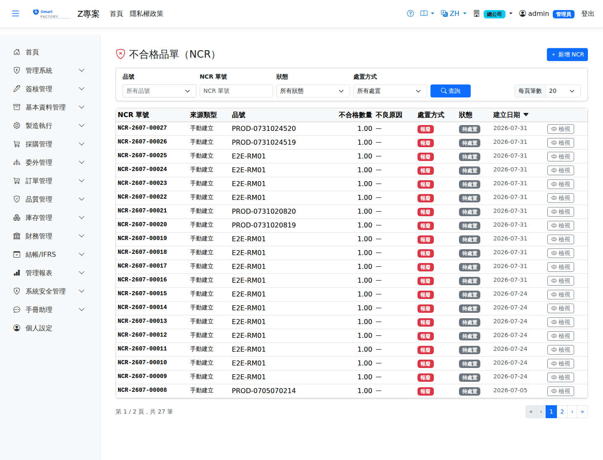

不合格品單（NCR）Non-Conformance Reports
檢驗不合格開立 NCR，記載不良事實與數量，經審理後執行處置並自動連動單據：報廢（Scrap）→ 產生報廢單過帳；重工（Rework）→ 產生重工工單；特採（UseAsIs）→ 放行；退貨（Return）→ 產生採購退貨草稿單（追溯原進貨帶入供應商與估價，與 NCR 雙向連結）；退件重工（ReturnRework）→ 委外 IQC 不合格退回委外廠重工，自動產生委外重工單草稿（預設廠商責任，成本由採購補登）。A failed inspection raises an NCR recording the defect and the quantity; after review the disposition is carried out and the matching document is created automatically: scrap → a scrap document is posted; rework → a rework work order; use-as-is → released; return → a draft purchase return (traced back to the original receipt, with the supplier and valuation filled in, linked to the NCR in both directions); return for rework → outsource material that fails IQC is sent back to the subcontractor for rework and a draft outsource rework order is created (the supplier is liable by default and the cost is entered by purchasing).

查詢Search
單據狀態Status
| 狀態Status | 說明Guide |
|---|---|
| 開立Raise | 記載不良事實，待品保審理。The defect is recorded and awaits QA review. |
| 處置中Disposition in progress | 已決定處置方式，關聯單據處理中。The disposition has been decided and the related documents are being processed. |
| 結案Close | 處置單據完成，閉環結束。The disposition document is complete and the loop is closed. |
作業流程Process
處置Disposition
列印Printing
清單每列的 按鈕（需有列印權限）在新分頁開啟含 QR Code 的列印單，可直接列印或另存 PDF。不合格品報告列印含來源、產品品名、數量與單位、倉庫儲位、不良代碼與名稱、原因分析、矯正措施、處置方式及處置產生的單據。The button on each row of the list (print permission required) opens a printout with a QR code in a new tab, ready to print or save as PDF. The NCR printout shows the source, product name, quantity and unit, warehouse and location, defect code and name, root cause, corrective action, disposition and the documents the disposition created.
欄位說明Field reference
欄位Field
| 欄位Field | 說明Guide |
|---|---|
| 來源類型 / 來源單號Source type / Source doc No | 必填Required 觸發本次不合格的來源（檢驗單、報工等）與單號，供品質追溯The source that raised this nonconformance (inspection order, production report …) and its number, for quality traceability |
| 品號Item | 必填Required 不合格的料件Nonconforming item |
| 數量 / 單位Qty / UOM | 必填Required 判定不合格的數量Quantity judged nonconforming |
| 不良代碼Defect code | 必填Required 不良現象的分類；僅能選用在該檢驗階段有勾選的代碼Category of the defect; only codes ticked for that inspection stage can be chosen |
| 根本原因Root cause | 問題調查後判定的真因，是改善行動的依據The root cause identified by the investigation, on which the improvement action is based |
| 矯正措施Corrective action | 為防止再發而採取的行動The action taken to stop it happening again |
| 處置方式Disposition | 必填Required 不合格品的去向：報廢（產生報廢單）／重工（產生工單）／退貨（產生採購退貨草稿單並回溯原進貨單）Where the nonconforming material goes: scrap (creates a scrap document) / rework (creates a work order) / return (creates a draft purchase return traced back to the original receipt) |
| 倉庫 / 儲位WH / Location | 不合格品目前的存放位置。處置選「報廢」時必填，存檔即檢查——報廢執行時要從這個儲位扣庫存。其他處置可留白Where the nonconforming material is now. Required when the disposition is Scrap and checked on save, because executing the scrap deducts stock from this location. Optional for other dispositions |
| 批號Lot | 批號管制品的批次Lot of a lot-controlled item |
| 備註Notes | 補充說明Notes |